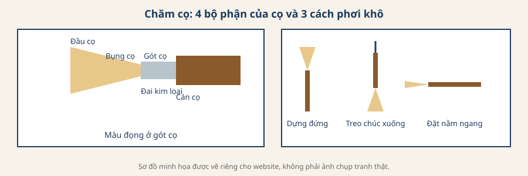

Chăm sóc cọ và bảo quản màu: rửa cọ, giữ dáng cọ và cất hộp màu
Bạn đã dùng bộ đồ chuẩn trong 18 bài vừa qua: giấy 300 gsm, hộp màu pan 12 màu, cọ tròn cỡ 8, cọ tròn cỡ 4 và cọ dẹt rộng khoảng 2 cm. Bài này dạy bạn giữ gìn bộ đồ đó: rửa cọ đúng cách sau mỗi buổi vẽ, giữ dáng cọ không bị xòe, và cất hộp màu khô ráo. Bạn chăm sóc cọ tốt thì một bộ cọ dùng được nhiều năm, và cọ sạch vẽ đẹp hơn cọ bẩn. Bạn đừng đợi cọ hỏng mới học cách chăm cọ.

Sơ đồ minh họa tự vẽ — không phải ảnh chụp tranh thật. Sơ đồ cọ tròn với 4 bộ phận: đầu cọ, bụng cọ, gót cọ và đai kim loại; 3 cách phơi khô: dựng đứng, treo chúc đầu xuống, đặt nằm ngang.
Cọ có 4 bộ phận, và màu đọng ở gót cọ
Bạn hiểu cọ trước khi rửa cọ. Cọ tròn có 4 bộ phận: đầu cọ là điểm nhọn, bụng cọ là phần giữa phình ra chứa nước, gót cọ là chỗ lông chụm lại và chui vào đai kim loại, đai kim loại là ống kim loại giữ lông cọ bằng keo. Arthur Sterling viết trên Watercolor Daily rằng màu hiếm khi dính ở đầu cọ, mà đọng ở gót cọ, chỗ lông dày nhất nơi chui vào đai kim loại. Bạn khuấy cọ nhanh trong lọ nước không bao giờ rửa sạch được gót cọ.
Winsor & Newton viết rằng khi màu tích tụ ở gốc cọ, lông cọ xòe ra và đầu cọ mất điểm nhọn. Da Vinci viết điều tương tự về đai kim loại: cặn màu đọng lại và làm giảm dần độ đàn hồi và dáng cọ. Vì vậy một cây cọ "không còn nhọn nữa" thường là cọ bẩn, không phải cọ mòn. Bạn rửa cọ bằng xà phòng thì cọ nhọn lại, không cần mua cọ mới.
Bạn có 3 loại cọ trong bộ đồ chuẩn: cọ tròn không thể thiếu vì đa năng nhất, vừa tô mảng lớn vừa vẽ chi tiết và nét mảnh; cọ dẹt và cọ vuông thường mềm hơn, dùng cho nét hình học và viền sắc; cọ lông tự nhiên mỏng và rộng cùng lúc, chứa nhiều nước, cho nét mảnh và nét dày mà không cần nhấc cọ khỏi giấy. Bạn chăm sóc cả ba loại cọ bằng cùng một cách, chỉ khác ở chỗ cọ lông tự nhiên cần xà phòng nhẹ hơn cọ lông tổng hợp.
Rửa cọ trong 7 bước, mất 2–3 phút
Bạn rửa cọ sau mỗi buổi vẽ trong 7 bước, mất khoảng 2–3 phút cho một cây cọ. Bạn rửa cọ giữa các màu bằng cách tráng nhanh trong nước, không cần rửa đủ 7 bước.
Bước 1: lau bớt màu thừa. Bạn ấn nhẹ cọ lên khăn giấy hoặc vải không xơ và kéo về phía đầu cọ. Bước này lấy phần lớn màu ra trước khi màu tới nước rửa, nên nước rửa sạch lâu hơn. Bạn đừng chà đầu cọ ngang trên khăn giấy.
Bước 2: tráng dưới vòi nước chảy. Bạn để cọ dưới vòi nước chảy với đầu cọ chúc xuống, và hướng nước vào lông cọ, không hướng vào đai kim loại, để nước chảy ra qua đầu cọ. Winsor & Newton bắt đầu quy trình rửa cọ bằng cách này. Nếu bạn không có vòi nước, bạn khuấy cọ trong lọ nước sạch, không khuấy trong lọ nước bẩn.
Bước 3: rửa bằng xà phòng nhẹ trong lòng bàn tay. Bạn cho một ít xà phòng nhẹ vào lòng bàn tay và xoay cọ trong đó thành vòng tròn nhỏ. Bạn dùng nước mát hoặc nước ấm vừa, không dùng nước nóng. Winsor & Newton cảnh báo nước nóng làm màu thừa đông lại, nghĩa là màu đặc và vón cục trong búi lông.
Bước 4: rửa gót cọ nhẹ nhàng. Bạn ấn bụng cọ vào lòng bàn tay để xà phòng tới được gót cọ. Bạn thường thấy màu chảy ra ở đây dù đầu cọ trông đã sạch. Bạn đừng đẩy lông cọ ngược lại hoặc bẻ mạnh vào đai kim loại.
Bước 5: tráng và lặp lại tới khi nước trong. Bạn tráng xà phòng ra và rửa lại. Escoda viết rằng bạn rửa tới khi bọt không còn màu, da Vinci viết tới khi bọt chuyển sang trắng, Winsor & Newton viết tới khi nước chảy trong. Cả ba hãng đều nói cùng một điều: bạn dừng khi không còn màu chảy ra.
Bước 6: vắt nước và tạo lại dáng cọ. Bạn ấn cọ vào vải hoặc khăn giấy để hút nước ra. Bạn tạo lại dáng cọ bằng ngón tay: kéo cọ tròn về thành đầu nhọn, kéo cọ dẹt về thành mép thẳng. Một cây cọ khô trong dáng cong sẽ giữ dáng cong đó.
Bước 7: phơi khô sao cho không có gì đè lên đầu cọ. Bạn đặt cọ nằm ngang, dựng đứng trên cán, hoặc treo chúc đầu xuống, tùy bạn có gì. Bạn chỉ cất cọ vào lọ hoặc hộp cọ khi cọ đã khô hoàn toàn.
Bạn rửa cọ giữa các màu bằng hai lọ nước: bạn khuấy trong lọ bẩn để lấy phần lớn màu ra, rồi khuấy trong lọ sạch để tráng cuối. Bạn chạm cọ vào khăn giấy trước khi lấy màu tiếp theo. Nếu khăn giấy vẫn còn màu cũ, bạn tráng lại. Thói quen hai lọ nước giữ lọ sạch đủ sạch để lần tráng cuối thật sự là nước sạch.
Bạn rửa sâu bằng cách làm đủ 7 bước hai lần, dành nhiều thời gian hơn cho bước 4. Bạn rửa sâu khi cọ đã mất đầu nhọn, hoặc cọ đã dùng cho màu gouache hay màu bám màu mạnh. Nếu cọ có màu khô cứng ở gót, bạn lặp lại bước xà phòng và lòng bàn tay nhiều lần thay vì ngâm cọ lâu trong nước. Princeton cảnh báo không ngâm cọ lâu, và Escoda cảnh báo không làm ướt đai kim loại và cán cọ.
Phơi khô cọ: 3 cách, hãng nào cũng đúng
Bốn hãng cọ lớn đồng ý với nhau về gần như mọi điều, trừ cách phơi cọ ướt. Winsor & Newton và Princeton nói dựng đứng, lông hướng lên. Da Vinci nói treo, lông chúc xuống. Escoda nói đặt nằm ngang. Cả ba cách đều an toàn nếu bạn hiểu lý do của từng cách. Lưu ý: hai nguồn của bài này không đồng ý với nhau về cách treo chúc đầu xuống — da Vinci nói đó là cách lý tưởng, còn Domestika nói không bao giờ phơi chúc đầu xuống vì đầu cọ sẽ biến dạng. Website này theo Watercolor Daily: cả ba cách đều an toàn nếu đầu cọ không bị đè lên thứ gì.
Treo chúc đầu xuống đưa mọi giọt nước thừa ra khỏi đai kim loại và ra qua đầu cọ. Keo và cán cọ khô nhất. Điểm khó là bạn cần giá treo kẹp được cán cọ. Đó có lẽ là lý do da Vinci viết "lý tưởng là" treo chúc đầu xuống.
Dựng đứng, lông hướng lên giữ đầu cọ không bị chạm hay cong, và chỉ cần một cái lọ. Nhưng nước còn lại trong lông sẽ chảy xuống đai kim loại. Đó là lý do Winsor & Newton thêm rằng đai kim loại và cán cọ phải khô hoàn toàn, và bước 6 quan trọng hơn ở cách này: bạn vắt càng nhiều nước ra càng tốt trước khi dựng cọ lên.
Đặt nằm ngang là cách ở giữa. Trọng lực không đẩy nước về phía đai kim loại cũng không đẩy nước ra khỏi đai kim loại, và cọ không bị đổ. Cách của Escoda hợp với khăn bếp trên bàn, thứ hầu hết mọi người đều có. Bạn nhớ để đầu cọ thò ra khỏi mép khăn hoặc nằm tự do, không bị ép vào nếp gấp.
Cả bốn hãng đều cấm một điều: không bao giờ để cọ khô khi đầu cọ bị đè lên thứ gì. Princeton viết thẳng: "Không bao giờ để cọ tựa lên đầu cọ." Một cây cọ để đứng chúc đầu xuống trong lọ nước vi phạm quy tắc này, và Escoda viết rằng cây cọ như vậy sẽ mất dáng.
Bạn phơi cọ ở nhiệt độ phòng, không phơi trên lò sưởi hay dùng máy sấy tóc thổi vào cọ. Da Vinci cảnh báo nhiệt trực tiếp, như lò sưởi, làm hỏng lông cọ, cán gỗ và đầu cọ. Máy sấy tóc thổi vào cọ cũng là nhiệt trực tiếp. Bạn để cọ khô tự nhiên, dù mất vài giờ.
5 lỗi làm hỏng cọ nhanh nhất
Để cọ ngâm trong lọ nước. Đây là lỗi lớn nhất khi chăm cọ. Trọng lượng của cán cọ đẩy đầu cọ vào đáy lọ và làm cong đầu cọ, và cán gỗ hút quá nhiều nước sẽ nứt. Princeton viết rằng không bao giờ để cọ ngâm lâu. Bạn lấy cọ ra khỏi lọ ngay khi vẽ xong, và đặt cọ nằm ngang trên khăn ẩm khi không dùng tới.
Dùng nước nóng. Nước nóng làm màu thừa đông lại trong gót cọ. Bạn dùng nước mát hoặc nước ấm vừa, không dùng nước nóng.
Chà bằng nước rửa chén. Nước rửa chén làm ra để tẩy dầu mỡ, và nó tẩy luôn dầu tự nhiên trong lông cọ tự nhiên như lông chồn và lông sóc. Bạn dùng xà phòng tay nhẹ hoặc xà phòng cọ làm từ dầu thực vật cho cọ lông tự nhiên. Bạn chỉ dùng nước rửa chén cho cọ lông tổng hợp khi không còn lựa chọn nào khác, và bạn tráng thật kỹ.
Phơi khô trên đầu cọ hoặc trên lò sưởi. Cọ khô khi bị đè lên thứ gì sẽ giữ dáng đó. Cọ khô trên lò sưởi có thể nứt cán và lỏng đầu cọ.
Cất cọ ướt vào hộp. Cọ ẩm đóng trong hộp hoặc nắp kín sẽ ẩm nhiều ngày, và nước đọng trong đai kim loại. Winsor & Newton viết rằng bạn chỉ cất cọ vào lọ hoặc hộp khi cọ đã khô hoàn toàn. Bạn cất cọ khô trong lọ dựng đứng ở nhà, và dùng cuộn cọ bằng vải hoặc tre khi đi xa, vì cuộn cọ để cọ tiếp tục khô sau khi bạn cất vào.
Bạn giữ một cây cọ tổng hợp cũ cho những việc nặng: keo chặn màu, màu gouache và chà mạnh. Bạn đừng dùng cọ tròn tốt nhất của mình cho keo chặn màu, vì keo chặn màu làm hỏng lông cọ nhanh nhất. Bạn bôi xà phòng lên cọ trước khi dùng keo chặn màu để giữ keo latex không dính vào lông cọ.
Bảo quản hộp màu và giấy
Bạn bảo quản hộp màu pan bằng cách để màu khô hẳn trước khi đậy nắp hộp. Bạn cất hộp màu ở nơi khô ráo, tránh ánh nắng trực tiếp và tránh nơi nóng. Bạn đừng để hộp màu mở nắp trong phòng ẩm nhiều ngày, vì màu pan hút ẩm và mềm ra. Bạn lau khay pha màu sau mỗi buổi vẽ bằng khăn ẩm, vì màu khô trên khay sẽ lẫn vào màu mới lần sau.
Bạn bảo quản giấy màu nước bằng cách cất giấy nằm phẳng, khô ráo, tránh ánh nắng trực tiếp, giống như cách cất tranh trong bài "Giữ tranh màu nước khỏi phai và ẩm: treo, đóng khung và cất giữ". Bạn đừng cất giấy đứng dựa vào tường trong phòng ẩm, vì giấy sẽ cong và hút ẩm. Bạn giữ giấy trong túi hoặc hộp kín khi không dùng tới, và bạn lấy giấy ra trước khi vẽ khoảng vài phút để giấy thích nghi với nhiệt độ phòng.
Bạn kiểm tra cọ của mình mỗi tháng một lần: bạn xem đầu cọ có còn nhọn không, lông cọ có xòe không, đai kim loại có lỏng không. Bạn rửa sâu những cây cọ đã mất đầu nhọn, và bạn thay cây cọ nào mà đai kim loại đã lỏng và lông cọ rụng nhiều. Một cây cọ tốt được chăm sóc đúng cách dùng được nhiều năm, và bạn không cần mua cọ mới thường xuyên.
Bài tập: rửa sâu cả bộ cọ trong một buổi
Bạn dành một buổi để rửa sâu cả bộ cọ của mình: cọ tròn cỡ 8, cọ tròn cỡ 4 và cọ dẹt rộng khoảng 2 cm. Bạn làm đủ 7 bước cho mỗi cây cọ, dành nhiều thời gian cho bước 4 là rửa gót cọ. Bạn xem màu chảy ra ở gót cọ dù đầu cọ trông đã sạch. Bạn tạo lại dáng cọ bằng ngón tay và phơi khô nằm ngang trên khăn sạch. Bạn sẽ thấy cọ của mình nhọn lại và vẽ đẹp hơn ngay buổi vẽ tiếp theo.
Kết luận
Cọ hỏng thường vì bẩn chứ không phải vì mòn: màu đọng ở gót cọ làm lông cọ xòe ra và mất đầu nhọn. Bạn rửa cọ trong 7 bước sau mỗi buổi vẽ: lau bớt màu, tráng dưới vòi nước, rửa bằng xà phòng nhẹ trong lòng bàn tay, rửa gót cọ, tráng tới khi nước trong, vắt nước và tạo lại dáng cọ, phơi khô sao cho không có gì đè lên đầu cọ. Bạn không bao giờ để cọ ngâm trong lọ nước, không dùng nước nóng, không chà bằng nước rửa chén cho cọ lông tự nhiên. Bạn cất cọ khô và hộp màu khô ráo, tránh ánh nắng trực tiếp.
Bài tiếp theo, bài "Lộ trình 30 ngày vẽ màu nước cho người mới", dùng bộ cọ sạch và hộp màu gọn gàng này cho 30 ngày vẽ liên tiếp, mỗi ngày 15–20 phút, từ wash phẳng tới bức tranh hoàn chỉnh.
Nguồn tham khảo
- Arthur Sterling, Watercolor Daily, "How to Clean Watercolor Brushes: 7 Steps, 3 Ways to Dry" — 4 thói quen (lấy màu ra trước khi khô, xà phòng nhẹ, giữ nước khỏi đai kim loại, không phơi khô trên đầu cọ); 7 bước rửa cọ (lau màu thừa, tráng dưới vòi nước đầu chúc xuống, xà phòng trong lòng bàn tay, rửa gót cọ, tráng tới khi nước trong, vắt nước và tạo dáng, phơi khô); 3 cách phơi khô (Winsor & Newton và Princeton dựng đứng, da Vinci treo chúc đầu xuống, Escoda đặt nằm ngang); màu đọng ở gót cọ, không nhúng cọ tới đai kim loại; nước mát hoặc ấm vừa, không nóng; xà phòng nhẹ, không dùng nước rửa chén cho lông tự nhiên; cọ mới rửa lớp keo giữ dáng trước khi vẽ; không để cọ ngâm trong lọ nước; không cất cọ ướt vào hộp (truy cập 23/11/2026, W-14 mở trực tiếp): https://www.watercolordaily.com/blog/how-to-clean-watercolor-brushes
- Naranjalidad, Domestika, "Watercolor tutorial: brushes types and care" — 3 loại cọ (tròn đa năng nhất, dẹt và vuông cho nét hình học và viền sắc, lông tự nhiên chứa nhiều nước); 5 mẹo chăm cọ (không bao giờ để ngâm trong nước, dùng xà phòng cho cọ bẩn, tạo lại dáng bằng ngón tay, luôn phơi khô nằm ngang, phơi khô ngoài không khí; dựng đứng được nhưng không bao giờ chúc đầu xuống) (truy cập 23/11/2026, W-14 mở trực tiếp): https://www.domestika.org/en/blog/11775-watercolor-tutorial-brushes-types-and-care?exp_set=1